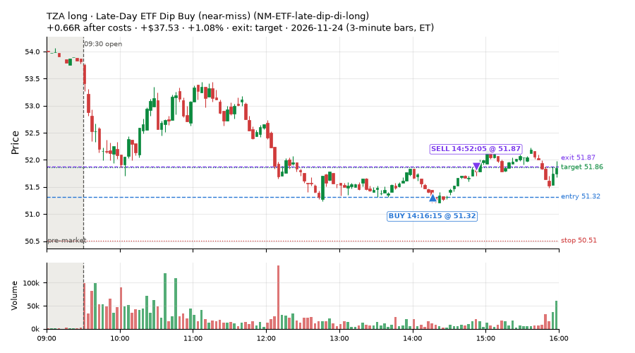
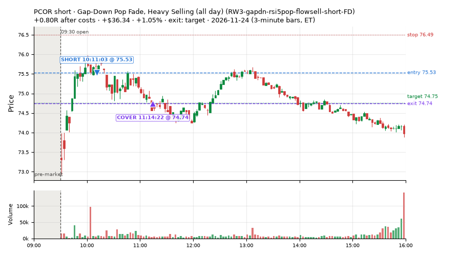
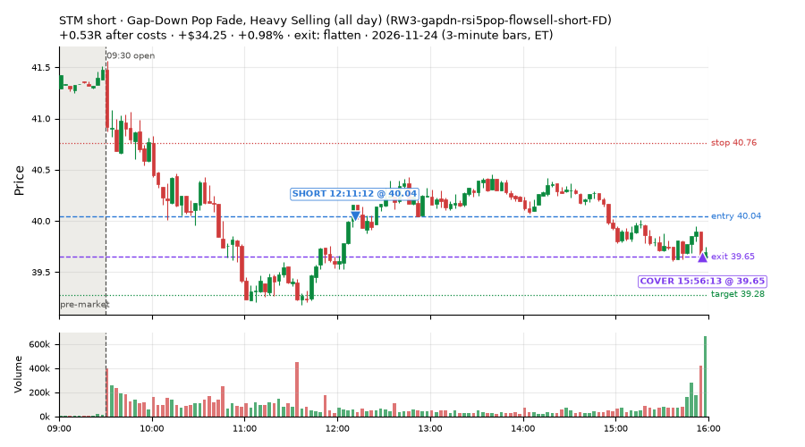
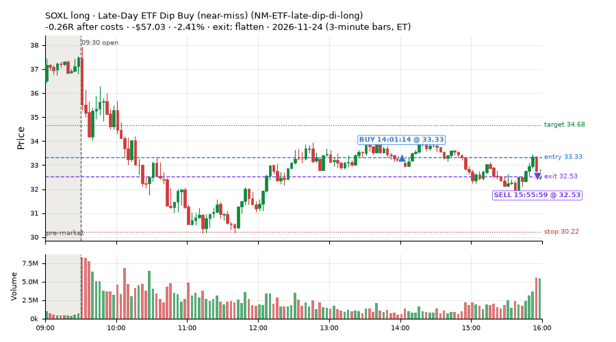
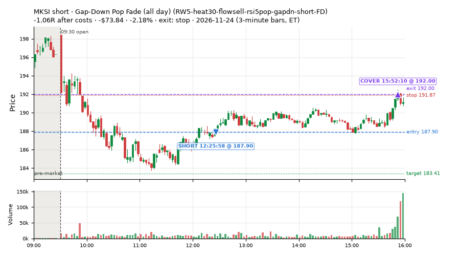
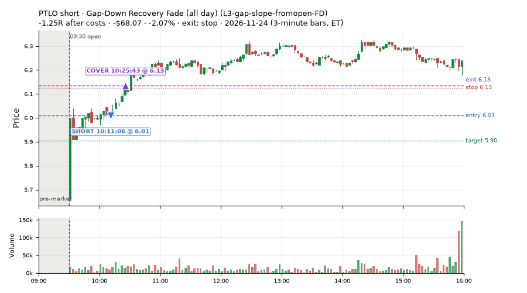
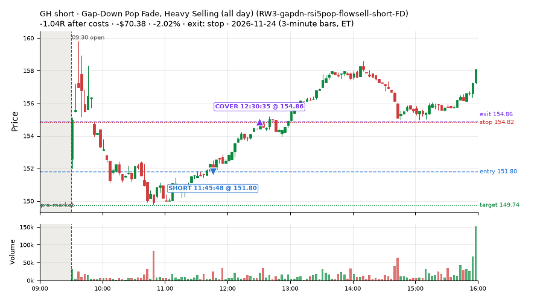

25 trades · win rate 32% · P/L $-600.04
PROBATION: no live setup has passed both locked test periods. 10 owner-directed setups added 2026-10-08 (MarcoFlow top 5 + 5 new), untested live. RW6G1 (RW6 + VWAP band guard) added 2026-10-09, probation.

| Symbol | Setup | Side | In | Out | Entry | Exit | Exit reason | % gained | P/L |
|---|---|---|---|---|---|---|---|---|---|
| TZA | Late-Day ETF Dip Buy (near-miss) (NM-ETF-late-dip-di-long) | long | 14:16 | 14:52 | 51.32 | 51.87 | target | +1.08% | $37.53 |
| PCOR | Gap-Down Pop Fade, Heavy Selling (all day) (RW3-gapdn-rsi5pop-flowsell-short-FD) | short | 10:11 | 11:14 | 75.53 | 74.74 | target | +1.05% | $36.34 |
| STM | Gap-Down Pop Fade, Heavy Selling (all day) (RW3-gapdn-rsi5pop-flowsell-short-FD) | short | 12:11 | 15:56 | 40.04 | 39.65 | flatten | +0.98% | $34.25 |
| Symbol | Setup | Side | In | Out | Entry | Exit | Exit reason | % lost | P/L |
|---|---|---|---|---|---|---|---|---|---|
| LUNR | RW3-gapdn-rsi5pop-flowsell-short-FD | short | 11:40 | 14:20 | 8.95 | 9.30 | stop | -3.91% | $-137.20 |
| SOXL | NM-ETF-late-dip-di-long | long | 14:01 | 15:55 | 33.33 | 32.53 | flatten | -2.41% | $-57.03 |
| MKSI | RW5-heat30-flowsell-rsi5pop-gapdn-short-FD | short | 12:25 | 15:52 | 187.90 | 192.00 | stop | -2.18% | $-73.84 |
| PTLO | L3-gap-slope-fromopen-FD | short | 10:11 | 10:25 | 6.01 | 6.13 | stop | -2.07% | $-68.07 |
| GH | RW3-gapdn-rsi5pop-flowsell-short-FD | short | 11:45 | 12:30 | 151.80 | 154.86 | stop | -2.02% | $-70.38 |







Signal to fill: median 2s, 90th percentile 4s (25 trades). Bars close each minute; the order follows the bar close.
Best excursion (MFE): median 0.35R; worst (MAE) median 0.88R. 44% of trades never got +0.25R in our favour; 0 reached +1R and still closed at or below 0.
| Symbol | Setup | Best R | Worst R | Closed R |
|---|---|---|---|---|
| INDA | RW3-gapdn-rsi5pop-flowsell-short-FD | +0.40 | -1.19 | -1.24 |
| AVT | RW3-gapdn-rsi5pop-flowsell-short-FD | +0.40 | -1.03 | -1.12 |
| GMED | RW3-gapdn-rsi5pop-flowsell-short-FD | +0.25 | -1.04 | -1.12 |
| PTLO | L3-gap-slope-fromopen-FD | +0.05 | -1.08 | -1.32 |
| BMO | RW5-heat30-flowsell-rsi5pop-gapdn-short-FD | +0.44 | -0.96 | -0.89 |
| Entry time | Trades | Win | Avg R | P/L |
|---|---|---|---|---|
| 09:50-10:30 | 4 | 25% | -0.75 | $-106.14 |
| 10:30-11:30 | 4 | 0% | -1.16 | $-199.04 |
| 11:30-13:00 | 14 | 43% | -0.31 | $-261.71 |
| 13:00-14:00 | 1 | 0% | -0.19 | $-13.65 |
| 14:00-16:00 | 2 | 50% | +0.20 | $-19.50 |
| Setup | Trades | Win | Avg R after costs | Adj R (net of SPY) | Avg R ex-market (all sessions) | P/L |
|---|---|---|---|---|---|---|
| Gap-Down Recovery Fade (all day) (L3-gap-slope-fromopen-FD) | 3.0 | 0% | -1.29 | -1.41 | -0.04 (beta -0.67, n 196) | $-186.70 |
| Late-Day ETF Dip Buy (near-miss) (NM-ETF-late-dip-di-long) | 2.0 | 50% | +0.20 | +0.27 | +0.22 (beta +1.19, n 35) | $-19.50 |
| Gap-Down Pop Fade, Heavy Selling (all day) (RW3-gapdn-rsi5pop-flowsell-short-FD) | 12.0 | 25% | -0.59 | -0.67 | -0.05 (beta -0.87, n 194) | $-336.92 |
| Gap-Down Pop Fade (all day) (RW5-heat30-flowsell-rsi5pop-gapdn-short-FD) | 8.0 | 50% | -0.15 | -0.29 | -0.06 (beta -0.59, n 201) | $-56.92 |
Market direction (SPY, beta 1) accounted for $-0.40 of today's $-600.04; the rest ($-599.64) came from the setups themselves. Avg R net of SPY: -0.56 (incl. a hedge leg's cost; report only).
4 setups live today. Today: 137 signals, 25 taken, 0 lost because another setup held the symbol (0%). Since 2026-10-06 (36 sessions): 6099 signals, 1477 taken, 205 lost to other setups (3%). Peak open positions today 16 of 77 slots. Earnings blackout removed 124 symbols before scanning.
Simulated playing time (not live): 4595 what-if trades of signals not taken, avg +0.10R, 61% winners; of them 205 lost to another setup (avg -0.10R).
Silent: intraday_momentum · Crowded out: MF4-h40-open-flowsell, MF3-open-flowsell-rsi5hi, MF5-flowsell-vwapup-rsi5hi · Starved: MF2-open-rsimidhi-flowsell
| Prio | Setup | Today sig / taken | Sessions | Signals / taken / trades | Taken/day | Expected/day | Lost to other setups | Lost to (setup n) | Top skip reasons | SIMULATED: not-taken n / avg R / win | Verdict |
|---|---|---|---|---|---|---|---|---|---|---|---|
| 1 | Late-Day ETF Dip Buy (near-miss) NM-ETF-late-dip-di-long | 3 / 2 | 10 | 42 / 35 / 35 | 3.50 | – | 0 | – | daily loss cap 5, spread / quote / size 2 | 7 / +0.19R / 71% | ok 17.5 entries/week |
| 2 | Gap-Down Pop Fade (all day) RW5-heat30-flowsell-rsi5pop-gapdn-short-FD | 16 / 8 | 28 | 296 / 201 / 201 | 7.18 | 12.79 | 0 | – | spread / quote / size 45, daily loss cap 26, not shortable / shorts off 23 | 95 / -0.04R / 47% | ok 35.9 entries/week |
| 3 | Gap-Down Pop Fade, Heavy Selling (all day) RW3-gapdn-rsi5pop-flowsell-short-FD | 23 / 12 | 28 | 341 / 194 / 194 | 6.93 | 13.59 | 1 | CWT14-failbrk-pdl-p10-lowvol-long 1 | spread / quote / size 59, daily loss cap 46, not shortable / shorts off 41 | 147 / +0.18R / 61% | ok 34.6 entries/week |
| 4 | Gap-Down Recovery Fade (all day) L3-gap-slope-fromopen-FD | 95 / 3 | 20 | 3440 / 196 / 196 | 9.80 | – | 66 | L3-gap-slope-fromopen-FD 66, L3-gap-slope-rsi5hi-FD 14 | not shortable / shorts off 2118, per-setup cap 648, daily loss cap 231 | 3237 / +0.16R / 63% | ok 49.0 entries/week |
Every trade is attached as a CSV you can open and edit in Excel or Google Sheets. Live page: https://misiti15.github.io/MCF/live/